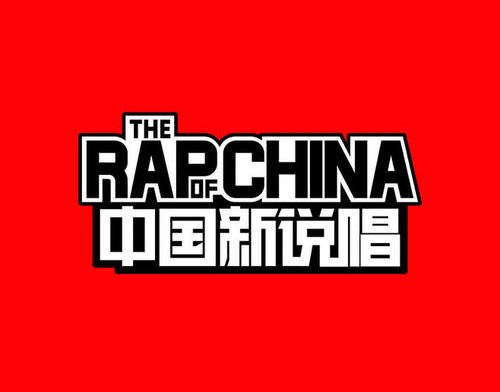
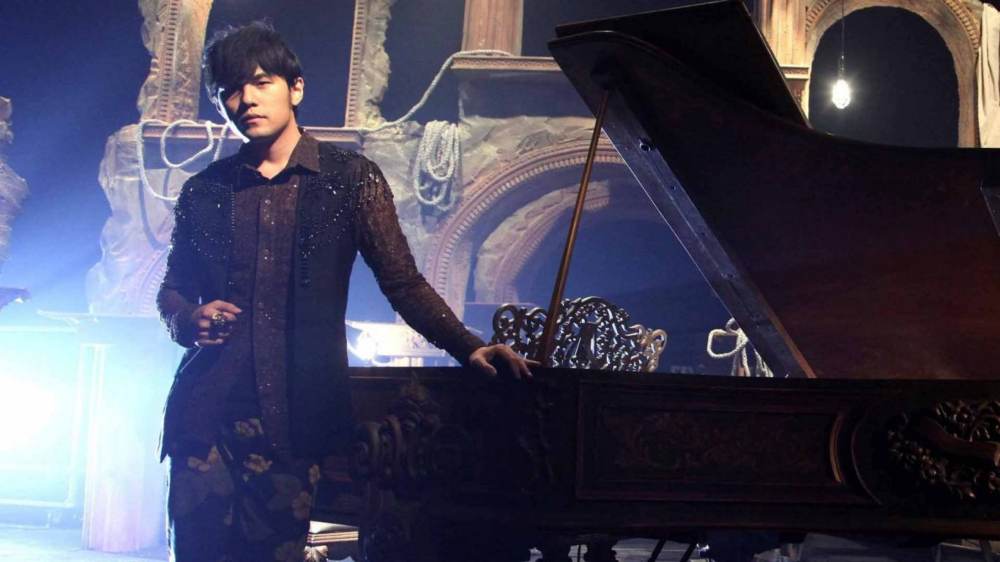
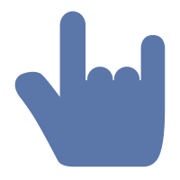
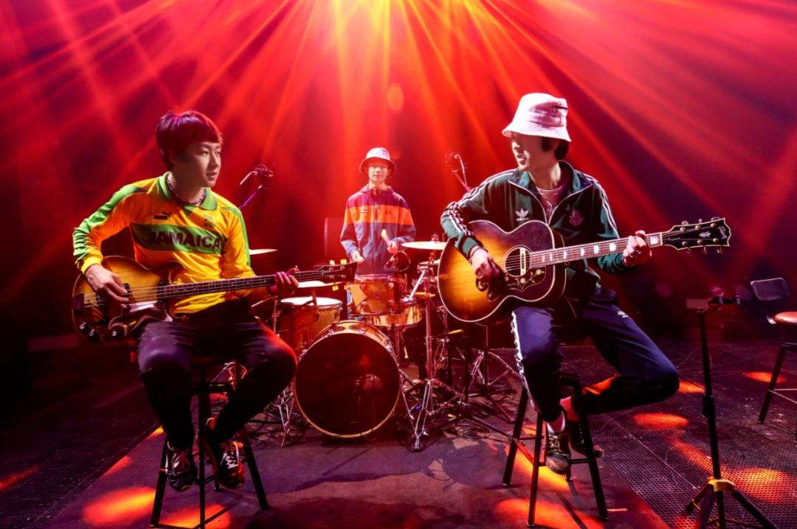
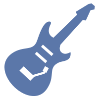
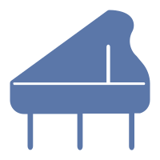

呼吸不止 音乐不停
【 我 的 音 乐 风 格 】
Hiphop

第一次接触Hiphop是通过《中国新说唱》系列节目，不得不感叹rapper们的押韵能力，节奏感也非常强，身体会不知不觉地随之摇摆。最喜欢的两个rapper是杨和苏和王以太，杨和苏的风格偏chopper和hardcore，王以太的风格偏旋律性说唱，希望有机会能够去听他们的livehouse。
流行音乐

无论何时，周杰伦永远是我心中的C位，才华横溢已经不能满足于形容他了，他的每首歌都是百听不厌的，比较喜欢的几首分享给大家：《晴天》、《一路向北》、《半岛铁盒》、《退后》…（太多写不下了）。今生一定要去听一次周杰伦演唱会，全场大合唱的气氛态好了~

乐队

真正带我进入乐队世界的是《乐队的夏天》这个节目，观看乐队现场是真的炸裂和过瘾，我的心中也燃起了一个乐队梦。目前最喜欢的乐队是盘尼西林，他们将优美的旋律和夸张、狂放不羁的现场融合，时而狂躁、时而恬静、时而阳光、时而忧郁，将情绪变化很好的融合到音乐里。
来听听我的歌声吧《夏天的风》
【 我 的 乐 器 】

吉他

电子琴